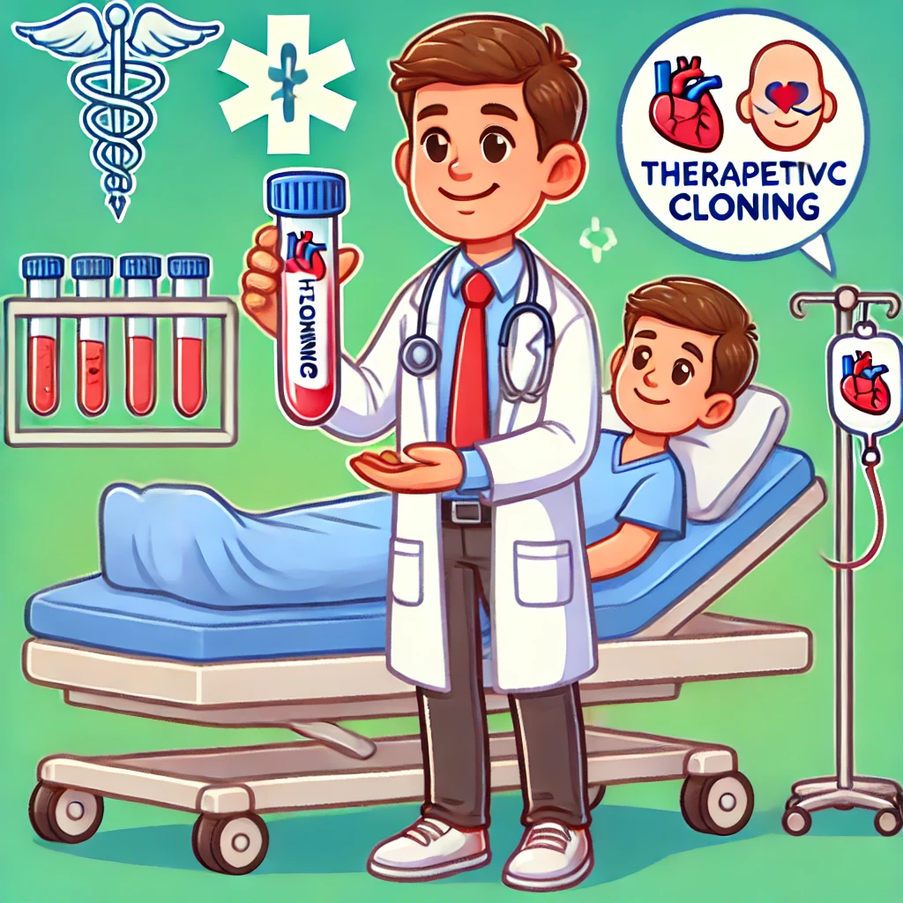

Human cloning offers significant benefits in medicine. One of the most promising applications is in the field of organ transplants. Through therapeutic cloning, scientists could potentially grow organs that are genetically identical to the patient, eliminating the risk of organ rejection and reducing waiting times for transplants.
Additionally, cloning technology could pave the way for new treatments in regenerative medicine, helping to repair or replace damaged tissues and organs. This technology has the potential to drastically improve the quality of life for patients suffering from various diseases.